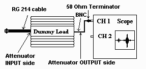

Back
Back
Protocol Setup
|
NOTE: All the voltages and oscilloscope values are based on using this protocol. YOU MUST use these parameters or the results may extend your troubleshooting process!
|
Considerations
-
The intent of these top-level measurements is to provide a quick,
general overview of the function of the RF system. Do not adjust the RF
system based on the values obtained here. If adjustment is required,
perform the adjustments with the related procedures below.
- Prior to taking the scan, DISABLE the T/R Drive Error Loop (SSM - On front panel, set the T/R
switch to the "Disable" position.
- Consider the scope reading roll-off if your scope is rated less than a 400 MHz.
- Scope input must be loaded with 50 ohms. (Use a BNC-Tee and a 50-ohm
terminator.)
- Measure the 180 degree pulse on the scope face.
- Voltage to watts formula, dB formula.
- Related procedures:
- Body Full Power Check
- Head Full Power Check
- Dummy Load and Cable Calibration
Protocol
|
The intent of this protocol is to provide a baseline setup. If a parameter is not mentioned here, leave the default value.
|
- ID: geservice
- COIL: HEAD or BODY (depending on requirements)
- PHANTOM: DQA or Body Loader shell with phantom.
- PSD: Spin-Echo
- MATRIX: 256 x 256
- WEIGHT: 300 lbs
- NEX: 1
- SLICE THICK: 5mm
- TE: 20ms
- TR: 300ms
- FOV: Head = 24cm, Body = 48cm
- Select SCAN T/R
- Increase TG to 200 (must use Maximum TG)
Suggested Oscillosope Settings
- This RF troubleshooting guide requires measuring all values with a 50-ohm terminator or
feed-through type 50-ohm terminator at the scope. Failure to add this 50-ohm termination will
result in erroneous results.
- All waveforms measured on the high power side through dummy load, should be measured ZERO to PEAK. Make sure to measure the 180
° pulse.
- Exciter output is very small. Measure its output waveform PEAK to PEAK.
- Reminder: The large waveform that appeared after touching [scan TR] button is the 180
° pulse.
WARNINGS:
Erbtec RF Amp Shutdown Procedure
- Connecting your scope channel directly to the high power side of the RF system without any attenuator or dummy load will result in serious damage to the scope and possible personal injury.
- Before moving your scope probe from one connection to the next, DISABLE the exciter with the switch/jumper provided.
- Make sure the attenuator or dummy load INPUT side is connected to the high power side of the RF system.
The scope should be attached to the OUTPUT side.
Dummy Load (Attenuator) and Scope Setup - Body/Head Check

Illustration 1
Dummy Load (Attenuator) and Scope Setup - Erbtec Solid State
Section Check

Illustration 2These directions for oscilloscope setup are general
settings, so the scope is in close configuration for measurement. Adjust the scope slightly as necessary.
To set up the scope:
- Set Volts/Div to 1 volt on the channel being used, and set channel to
DC.
- Set TRIGGER COUPLING to AC, SOURCE to NORM and TRIGGER MODE to
NORM.
- Set TRIGGER SOURCE to LINE (or use scope trigger on IPG).
- Set VERT MODE to the channel being used; use CHOP (if you have this
feature).
- Set HORIZ DISPLAY to the channel being used.
- Set TIME BASE to 2 ms.
Exciter Output:
NOTE: Exciter output is very small. Connect directly to the scope channel, make sure you use a
50-ohm terminator. Measure the waveform seen, PEAK to PEAK.
1. Set Volts/Div to .1 on Channel 1.
2. Set TRIGGER on LINE.
Voltage to watts formula, dB formula.
Back to MR Troubleshooting Flowcharts Top
Page.
Author: Douglas Hofstetter, GE Medical Systems. Creation date: October 22, 1999 Last update: February 17, 2000.